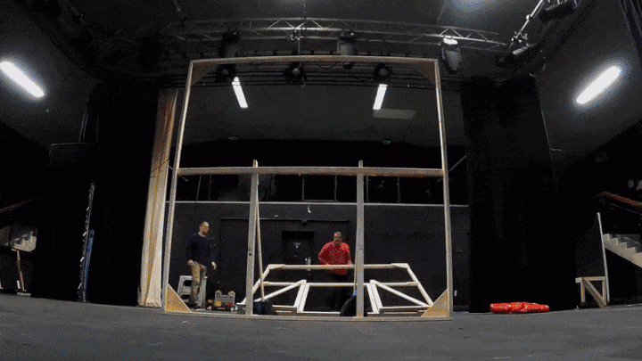
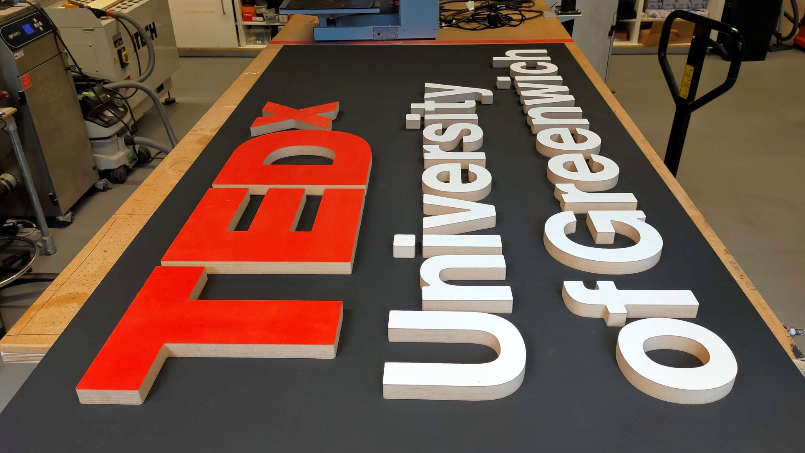
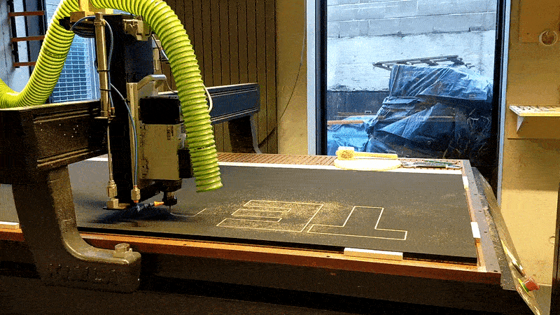
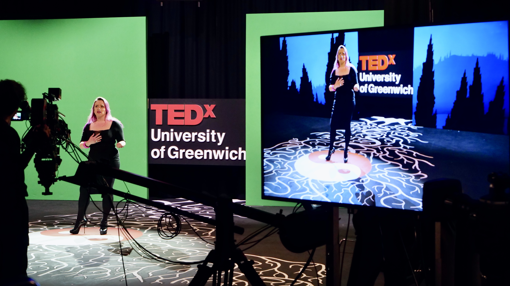
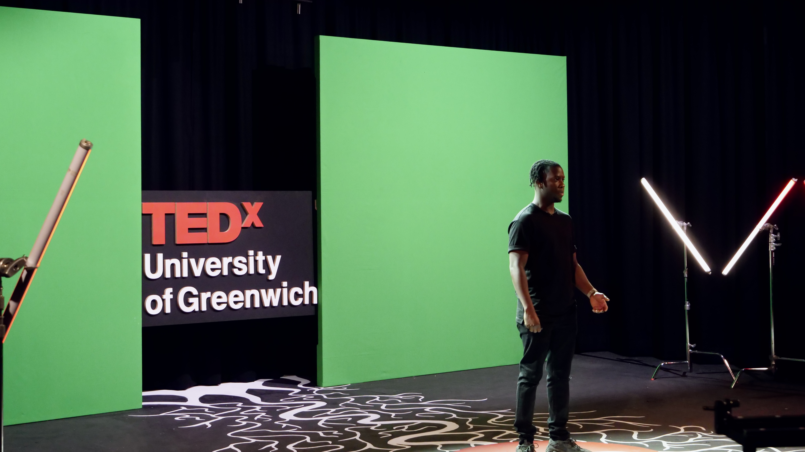
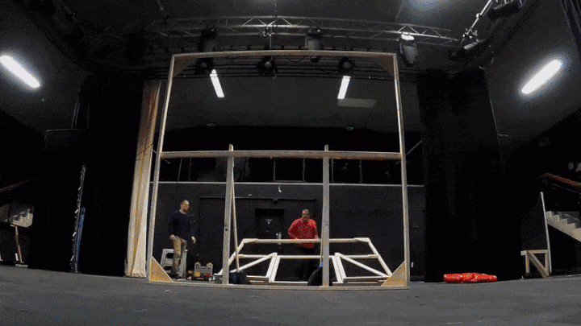
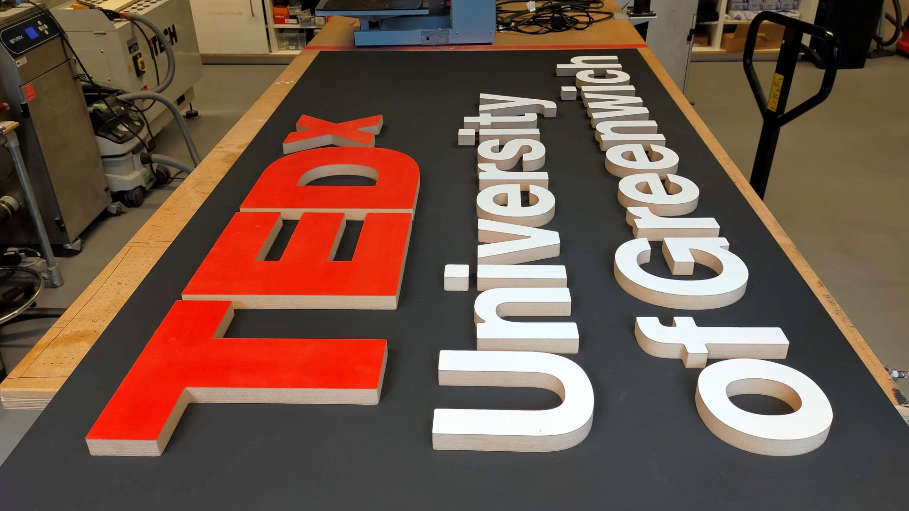
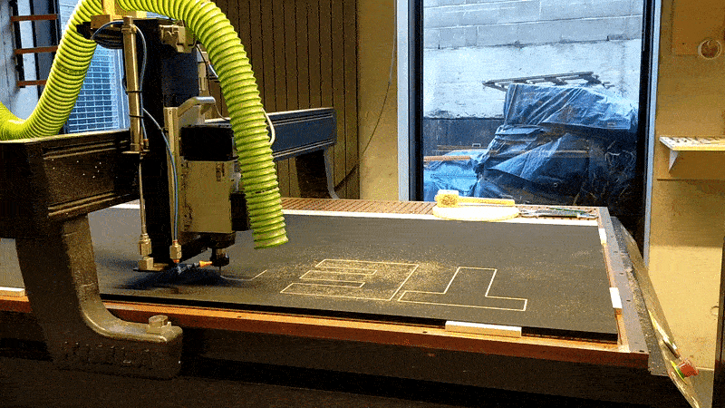
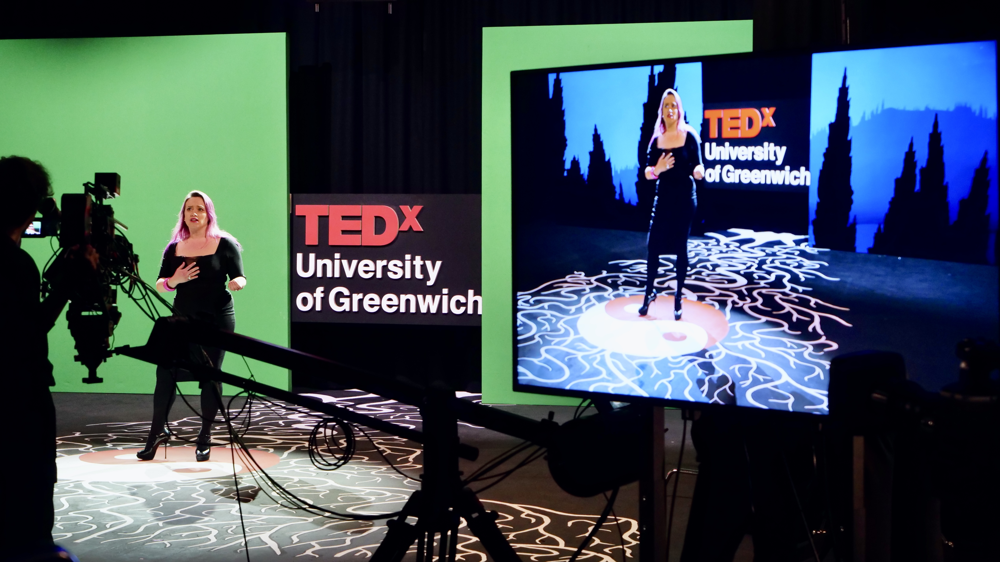
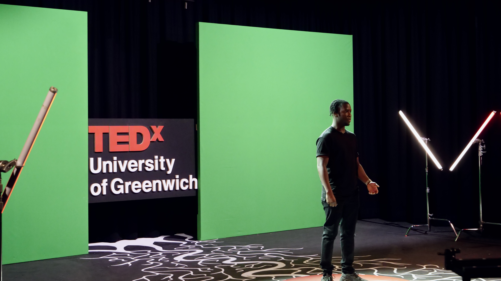

The Blueberry Roundup
Creative Direction, Copywriting, Graphic Design, Email Marketing
I redesigned one of Blueberry's newsletters from conception to launch, leading to its open rate increasing by 10%. To make it a success, I combined a clean design with simple, relevant copy that highlights Bluberry's services and reflects its approachable brand.


 








